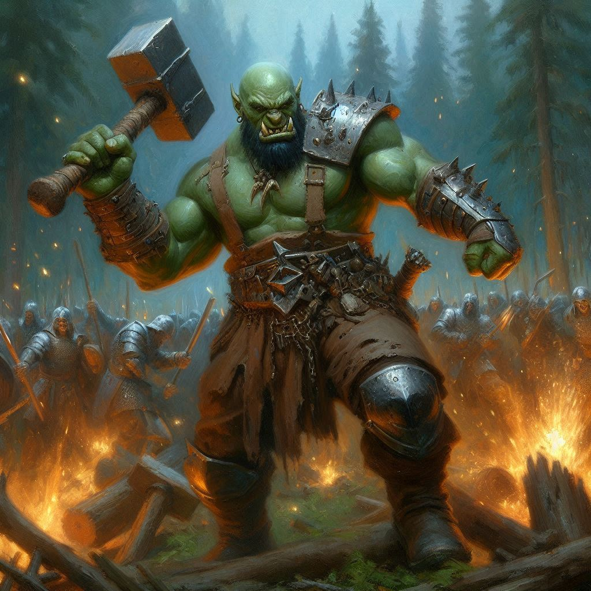
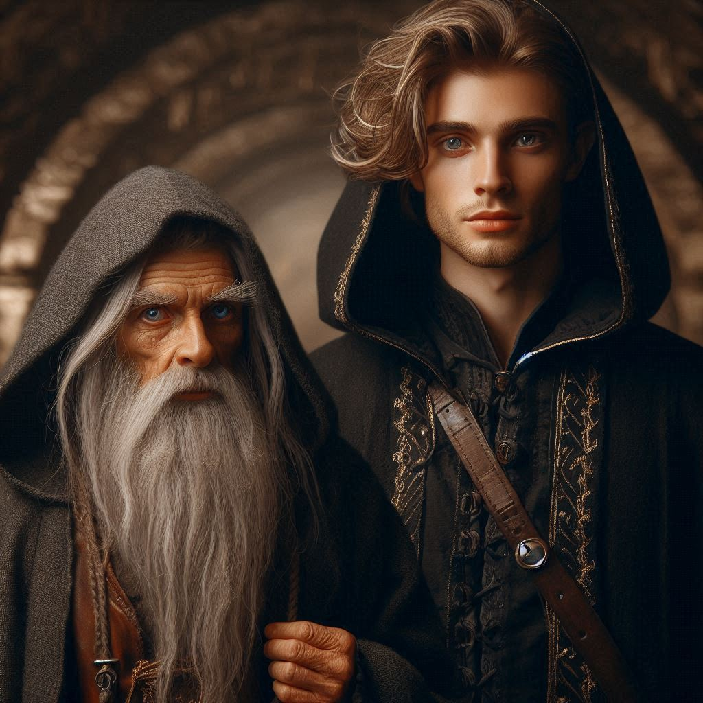
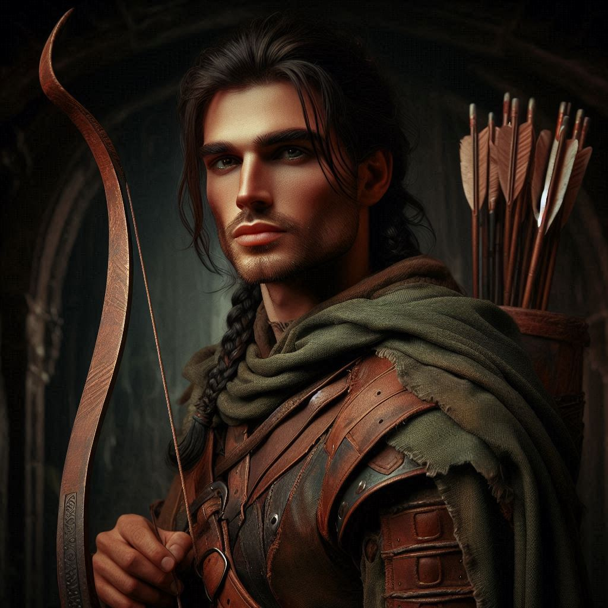

Suicide Mission
You stand at the edge of the flickering portal, its swirling shadows pulling at you with a cold, unrelenting force. Onyx, his grizzled face lined with tension, clutches the rune stone tightly in his hand, its faint glow the only source of light in the oppressive darkness. With an unheard whisper, the stone lifts out of his hand and hovers in the air before the old dwarf. Baider, ever the protective father figure, scowls beside you, arms crossed, clearly displeased by the situation.
“I don’t like this,” Baider growls, his eyes never leaving Onyx. “I’ve seen what that realm does to a person. It’s suicide to go in there, Kira.”
But your mind is made up. Onyx has explained the truth—he is not just an old sage, but the incarnate Archon Adonais, the one prophesied to destroy Yaldaboath. The only way to stop Varis now is to enter the Shadow Realm and face the dark forces head-on. You glance at Elias, standing just behind Baider. His handsome features are set in a mask of concern, but he gives you a short nod. He will follow you, no matter what.
“Baider,” you say softly, turning to the half-orc who raised you. “I have to go. If what Onyx says is true, this is the only way to stop Varis. We can’t let him open the portal fully and unleash Yaldaboath.”
Baider’s jaw tightens, and for a moment, you think he’ll argue. But then his shoulders slump, and he nods, though the anger in his eyes doesn’t fade. “I don’t like it, but you’re your own person now. Just... come back alive.”
A charging mercenary issues a war cry. “Stop them! Don’t let them escape!”
You and Elias spin and fire your bows simultaneously, effectively dispatching the two closest mercenaries. Four more Trade Ministry soldiers fill the gap, weapons held high as they rush toward you.
“Go!” Baider growls. “Get through the portal with Onyx. I’ll hold these traitors at bay!”
You turn to Onyx, whose eyes are sharp with purpose. His transformation from reclusive elder to Archon still feels unreal, but the weight of his revelation presses on you. Onyx reaches out, holding the rune stone toward the portal.
“Once we step through, there’s no turning back,” he says, his voice low and steady. “Umbra’Thal awaits us. And so does Jorsh.”
Jorsh. The name stings like a thorn in your heart. The boy you once loved, now a man driven by dark magic and a thirst for revenge. You have a mandate to arrest him, yet the thought of facing him again makes your chest tighten. Still, you know what must be done. You take a deep breath, steel yourself, and step forward.
Onyx activates the rune, and the shadows of the portal twist violently, expanding into a swirling vortex. Cold air rushes past you as the dark energy pulls you in. You don’t hesitate. With one last look at Baider, you step through.
The world shifts around you. The air is thick, heavy with the scent of decay and something else—magic, old and dark. As you emerge into the Shadow Realm, the oppressive weight of it presses on your chest. The sky above is a sickly green, and jagged black spires rise from the ground like the teeth of some long-dead beast.
Umbra’Thal, the capital of the dark elves, looms ahead, its towering structures wrapped in shadow. The streets are empty, save for the occasional flicker of movement in the corner of your vision. Onyx moves ahead with purpose, his presence a small light in the overwhelming gloom. Elias stays close to your side, ever-watchful.
"Where's Baider," you ask, looking around for your adoptive father. Elias looks at you with concern.
“He didn't make it through the portal before it closed. We need to move quickly,” Onyx says. “Jorsh will be waiting. He knows we’re here.”
As if summoned by the mere mention of his name, a figure steps from the shadows ahead. Jorsh. His dark robes billow in the unnatural wind, and his face—once familiar—now carries the weight of years spent in darkness. His eyes meet yours, and for a moment, something unspoken passes between you. Pain, regret, longing—it all swirls within you, as confusing and chaotic as the portal you just stepped through.
“Kira,” Jorsh says, his voice low but unmistakably tense. “You shouldn’t have come.”
Your heart clenches, but you force yourself to stand tall. “I had no choice,” you say, voice steady. “I have a mandate to bring you to justice.”
Jorsh flinches at your words, and for a moment, the boy you once loved flickers in his eyes. But then he steels himself, the hardness returning. “Justice? You think that’s what this is about? You don’t understand, Kira. Varis must be stopped. If you arrest me, everything will be lost.”
Onyx steps forward, his voice calm but commanding. “Remember what I told you, Jorsh. There is a larger game at play. We’re here to destroy Yaldaboath, not to quibble over personal vendettas.”
You look at Onyx quizzically. “Jorsh is trying to take Varis’s power. Jorsh is trying to control Yaldaboath for his own gain, Onyx.”
“No,” Onyx says to you before turning to Jorsh. “The rangers may not join us, boy. Be prepared.”
Jorsh’s eyes darken, and for a moment, it seems as though he might argue. But then he nods, resigned. “If that’s the case, we’ll need to move quickly. Varis is close to completing the ritual.”
A tense silence follows. You feel Elias stiffen beside you, his hand inching toward the hilt of his sword. He doesn’t trust Jorsh—he never has. And now Onyx appears to be working with Jorsh. Something all along has been out of place. You feel that Onyx has been manipulating you all along. You pull your sword halfway out of your scabbard. But something in Jorsh’s eyes makes you hesitate.
“Kira,” Onyx whispers in a low growl that sounds like heavy feet in deep gravel, “We need Jorsh to stop Varis and Yaldaboath. Put aside your heartache and loyalty to a corrupt crown and do the right thing.”
You can’t believe your ears. Onyx is with Jorsh! You look at Elias who shakes his head nervously and readies his bow. All you have to do is say the word, and Elias will take out Jorsh.
“Kira,” Jorsh says, “if you don’t trust me, then trust Onyx. He has always had Belladonna’s best interest at heart. You know that.”
"I needn't remind any of you that this is treason," Elias whispers. "Kira, we've sworn an oath."